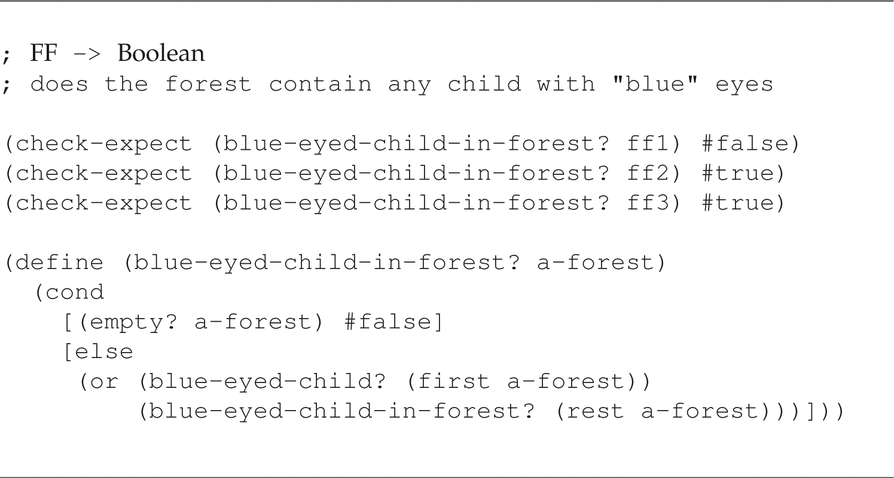

19.2 Forests
It is a short step from a family tree to a family forest:
; An FF (short for family forest) is one of: ;
-- '()
; -- (cons FT FF)
; interpretation a family forest represents several
; families (say, a town) and their ancestor trees
Here are some tree excerpts from figure 111 arranged as forests:
(define ff1 (list Carl Bettina))
(define ff2 (list Fred Eva))
(define ff3 (list Fred Eva Carl))
The first two forests contain two unrelated families, and the third one illustrates that unlike in real forests, trees in family forests can overlap.
Now consider this representative problem concerning family trees:
Sample Problem Design the function blue-eyed-child-in-forest?, which determines whether a family forest contains a child with "blue" in the eyes field.
The straightforward solution is displayed in figure 115. Study the signature, the purpose statement, and the examples on your own. We focus on the program organization. Concerning the template, the design may employ the list template because the function consumes a list. If each item on the list were a structure with an eyes field and nothing else, the function would iterate over those structures using the selector function for the eyes field and a string comparison. In this case, each item is a family tree, but, luckily, we already know how to process family trees.

Figure 115: Finding a blue-eyed child in a family forest
Let’s step back and inspect how we explained figure 115. The starting point is a pair of data definitions where the second refers to the first and both refer to themselves. The result is a pair of functions where the second refers to the first and both refer to themselves. In other words, the function definitions refer to each other the same way the data definitions refer to each other. Early chapters gloss over this kind of relationship, but now the situation is sufficiently complicated and deserves attention.
Exercise 314. Reformulate the data definition for FF with the List-of abstraction. Now do the same for the blue-eyed-child-in-forest? function. Finally, define blue-eyed-child-in-forest? using one of the list abstractions from the preceding chapter. 
Exercise 315. Design the function average-age. It consumes a family forest and a year (N). From this data, it produces the average age of all child instances in the forest. Note If the trees in this forest overlap, the result isn’t a true average because some people contribute more than others. For this exercise, act as if the trees don’t overlap.